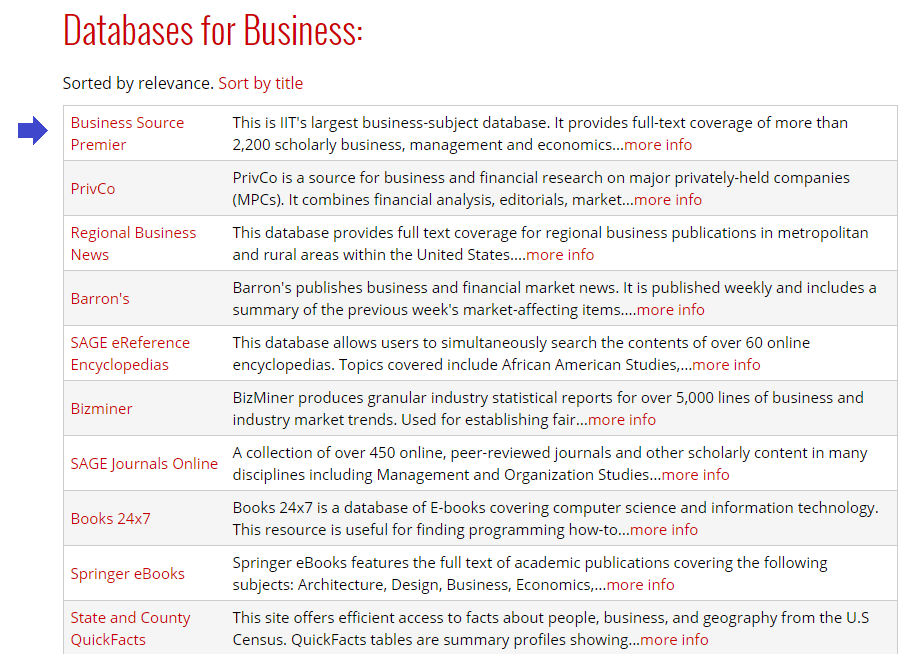
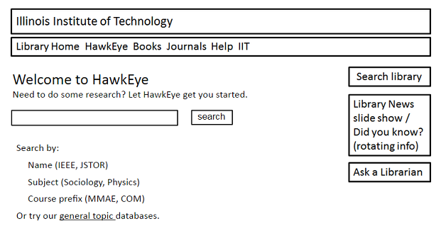
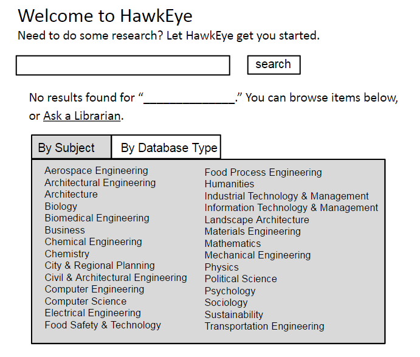

The look and feel of the current library website was developed by IIT's Marketing and Communication department. It uses the same color scheme, header and footer as the university's site at the time. The only areas that were customized for the library were the address and contact links; all of the other items remained the same. One problem our students have with this design is with this secondary header (figure 7).
Figure 7: Secondary header on the current library website.
These links were designed to appeal to people who are not currently students at IIT, but prospective students, employers, and former students. Current students looking for library resources often click on these links because of their bright colors and prominence on the page. Doing this removes them from the library website: library.iit.edu is located on a different server than www.iit.edu so that we can easily make changes to the site. Students become confused when they click on one of these links and leave the library site entirely.
The header on the new IIT site would cause even more confusion for students. Figure 8 is a screenshot of the new site at web.iit.edu with the "research" submenu displayed:
Figure 8: IIT main site secondary header.
None of the submenu links shown point to library resources, even though the main heading is "research." In the spring of 2014 I made the case to the Marketing and Communications team for the library to customize this header for our own use. Table 2 shows the statistics I collected from Google Analytics and sent to the team:
Table 2: Website statistics sent to Communications & Marketing.
I also included a mockup of the proposed custom header for the library:
Figure 9: Proposed header for new library site.
The combination of statistics and mockup was successful; the Marketing and Communications team will allow us to create our own header for the website. After getting some instruction on how to set up the custom header module from the IIT developer who created it, I created a separate header for library-specific links. Figure 10 shows the header with main and secondary entries designed primarily for current students and faculty. Student workers at the library are helping me come up with appropriate content for the header. As this process is ongoing, I have written a short script (available at https://github.com/galvinlibrary/Drupal-menu-import-script) that will allow me to convert a comma-delimited spreadsheet into the structure used by the IIT header module. The current version of the header can be viewed at http://216.47.136.104/.
Figure 10: New website header with student subheading displayed.
Screenshot taken March 1st, 2015.
The importance of electronic resources differs by subject area, and even within different sub-sections of one discipline. There are many databases that are useful for a broad range of subjects: Business Source Premier is listed as a resource for several major areas of study at IIT, from Applied Economics to Engineering Management to Psychology. But the importance of this database is different for each area, and I needed to reflect this difference. The Drupal community solved this problem with a module that allows for different sort filters to be applied to the same database query. The "databases by subject" pages now include a sort by relevance (the order being created by the subject librarian) as well as a sort by title. This can be viewed in the placement of the Business Source Premier database for one subject (figure 11) versus another (figure 12).
Figure 11: Databases sorted for the psychology subject.
Available at http://216.47.136.104/find/databases/by-subject/psychology.
Figure 12: Databases sorted for the business subject.
Available at http://216.47.136.104/find/databases/by-subject/business.
I wanted to create user personas to guide design decisions for the new site. There was no user testing done for the current website, and I think that is evident from the site's design: the home page includes more than 50 links. This obscures the three-to-four links that are constantly used, so I was determined to make IIT student input a large factor in the site redesign.
I advertised within the university's daily email communication for students who would be willing to be interviewed about their research habits. I chose six to interview: two graduate students and four undergraduates, with five different areas of study between them. I arranged to interview them in the reference suite—which is not a public area—for 30 to 45 minutes. I received permission from all of the students to record the audio of these sessions.
I used the same question structure for each interview, borrowing heavily from the topics suggested in Mulder's The User is Always Right: A Practical Guide to Creating and Using Personas for the Web (2007).
Table 3: Questions used for user interviews.
After the interviews were complete, I realized that I had limited my subjects to students who were proactive enough to read university communications and respond to a survey. I also wanted to get the perspectives of students who don't normally engage with the library, so I developed a short, five-minute interview that used a subset of the questions above and conducted several additional interviews outside of the student cafeteria at lunchtime.
Here are some paraphrased quotes from both the short and extended interviews
If you go to library.iit.edu, it shows up one way. If you go to it through Blackboard, it shows up a different way. And if you go to it through [my.iit.edu/ library resources], it shows up a different way.
My "perfect site" would include a single search box that searches all IIT resources.
I would like the site to be more simple, with a better layout and color scheme.
I use the SciFinder database from the databases page and start with an author search. If the author is prolific, I'll use the title stub from the citation I have. I also might Google the author first, and then use Google Scholar to see what references come up.
The interviews helped me define two types of student users: those who wouldn't normally use the library website, but need to in order to access subscription resources, and those who are interested in learning about library resources and use the website as the first stop in their research. Rather than thinking about these types as undergraduate versus graduate students, I instead created the "sporadic" and "power" user personas that can be viewed in Appendix B: Harried Javier and Resolute Rebecca.
Javier and Rebecca's personas are now posted in my office so that I will remember to consider their needs as the new site is built. I plan to create a faculty persona in the future as well.
The project I conducted with two classmates for the COM525 (User Experience Research and Evaluation) class helped inform the approach I used to create a "database finder" to connect students with scholarly library sources. The semester-long project started by interviewing students to find out how they conduct research for their assignments. We were not surprised to find out that students preferred to use Google as it is already a tool they use every day. What did surprise us was how they would simply accept whatever results they found in Google and would not bother seek help from another source, whether from a database or from IIT librarians. Here are some work activity notes from that process:
I'd rather use Google Scholar first because it searches many databases instead of just one at a time.
I used Google to find people who agreed with my thesis statement to find resources for my paper.
The user thinks the library's material is very reliable, but there's not as much available as compared to Google Scholar.
The last note in particular highlighted the need for better design in the library website. The library has much more information than will appear in Google Scholar, but the site needs to provide better access to it.
Working from the user research, we designed a very simple Google-like paper prototype that students could use to find a subscription databases, named "HawkEye." It included each database's name and description, as well as tags with IIT course prefixes (MMAE, ECE, etc.) so that students could quickly find resources tied to one of their classes. The search box was the most visible item, with a list of suggested uses (see figure 13).
Figure 13: HawkEye prototype—initial home page
We expected that students would enter searches that were too discrete to be successful, so we constructed a more detailed error page. The error page would still include the search box, but would also provide direct links to database resources by subject area and content type (see figure 14).
Figure 14: HawkEye prototype—error page
The results were conclusive: our design was not successful. The testers ignored the directions on the home page in favor of submitting too-discrete entries into the search box. One task was to locate a database by the type of content it contained:
You have an assignment to write a 4-page paper on animal physiology for your biology class. Your professor has instructed you to cite at least 2 sources from scholarly articles. You have arrived at the HawkEye home page to search for these sources.
As noted earlier, our testers used terms that were too narrow (animal physiology) instead of those tied to a particular subject or course (biology). The main concept I learned from this project for me was: don't make it look like Google if you can't make it act like Google.
In the executive summary section of the report, we included a revised home page that focused more on browsing than on searching (see figure 15).
Figure 15: HawkEye prototype—revised home page.
I am committed to continuing user experience testing throughout the design and build process. It will not be as expansive as the semester-long research I conducted with my COM525 team, but I plan on creating many small, quickly-completed tests to help me make design and content decisions while I build the site.